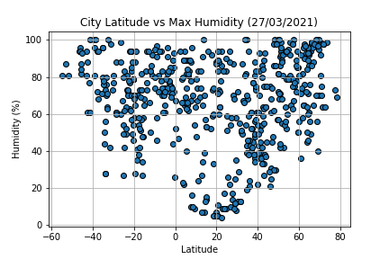
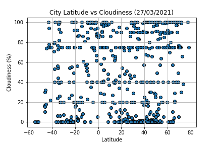

The goal of this page is show how the temperature change depending of the near with the ecuator, in order to analyze the weather data I use pandas and matplotlib to cross latitude and max temperature of cities
 